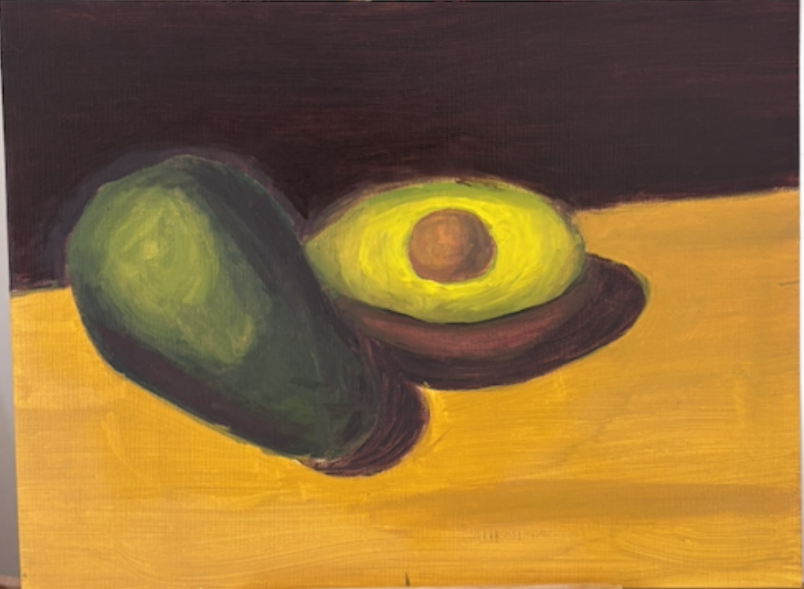
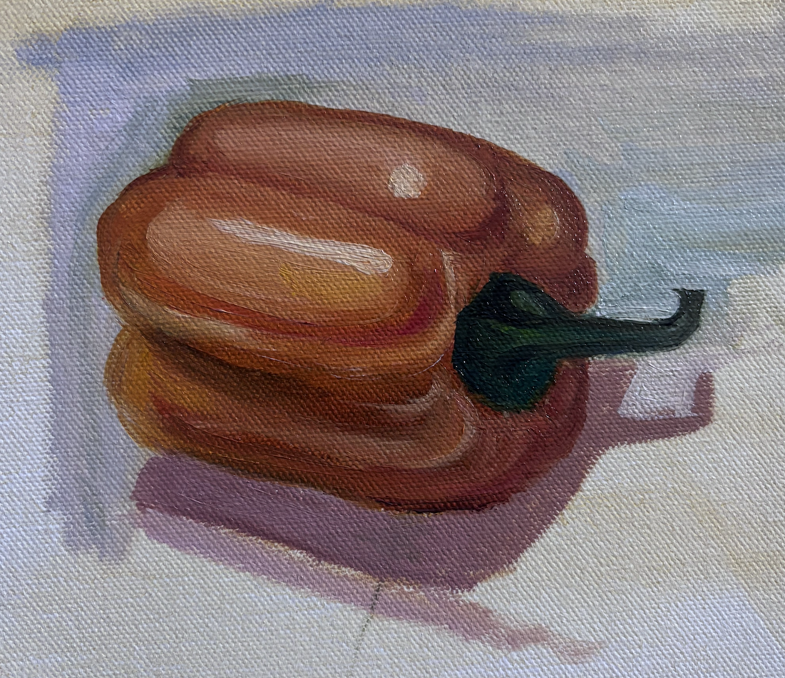
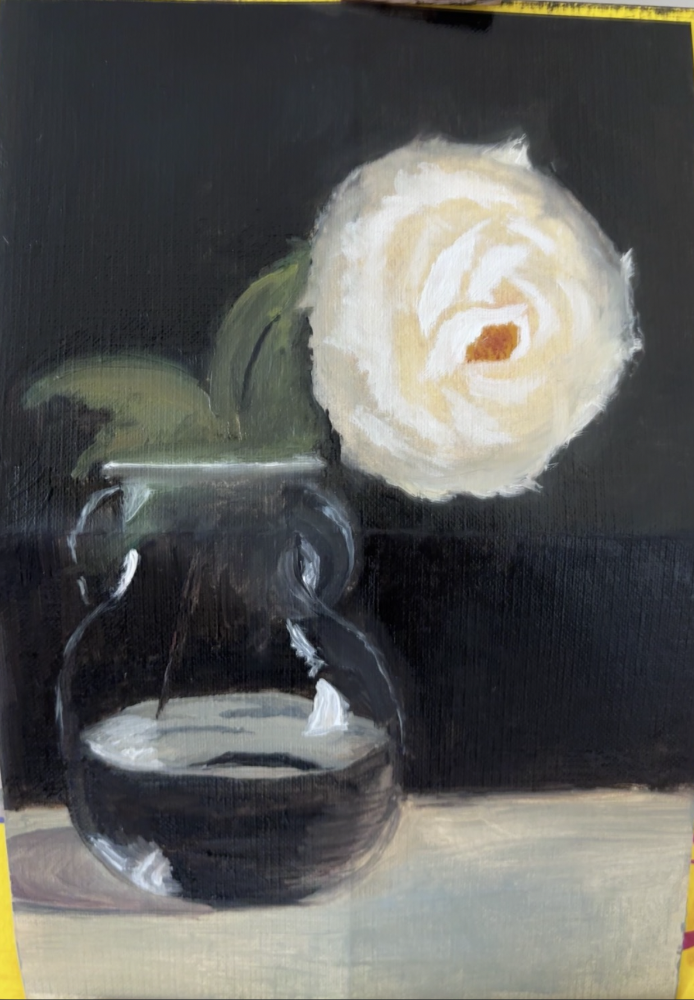
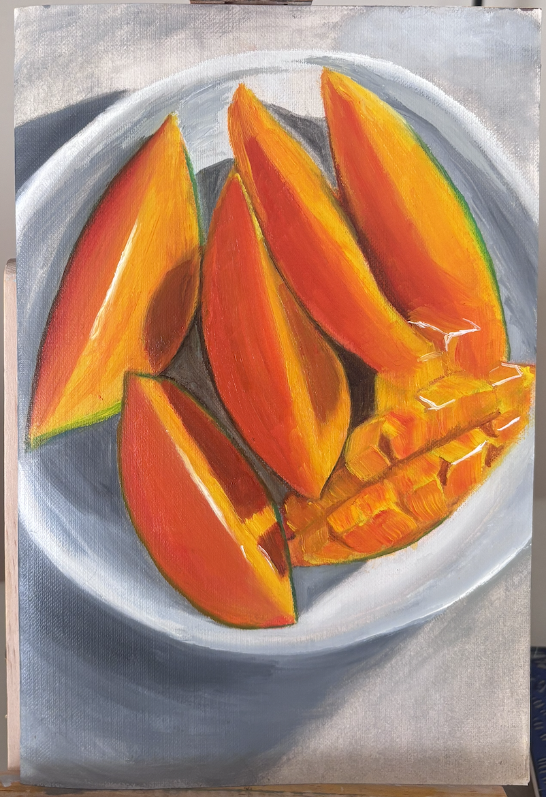
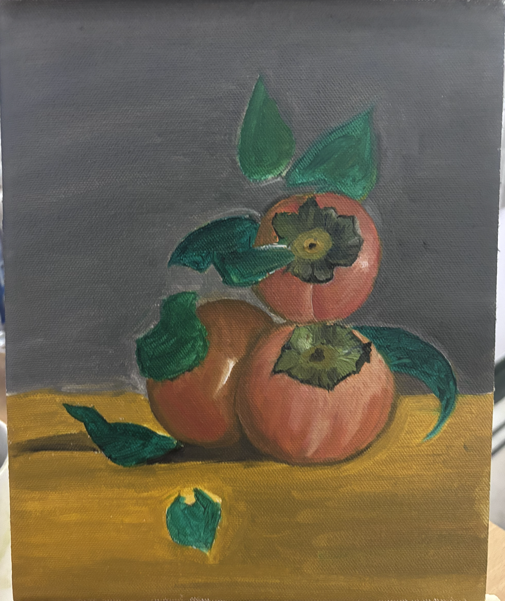
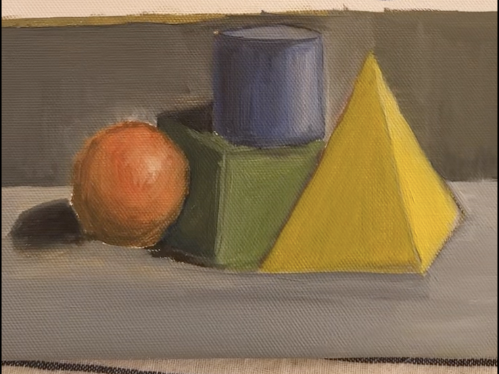

OIL
In late 2025, I became possessed by persimmons. I really wanted a still life of a lush tablescape full of them, but I was unable to find a print or painting that looked quite right. So, I started oil painting for fun. Follow along as I (hopefully) get better at the medium and eventually paint the persimmon tablescape of my dreams.





